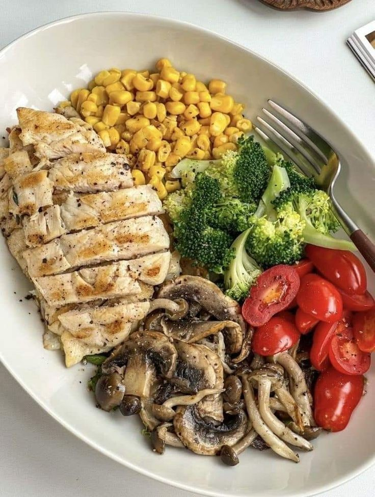

Consejos para una Alimentación Saludable

Descubri cómo mejorar tu alimentacion diaria con estos consejos prácticos:
- Aumenta tu consumo de fibra: frutas, verduras y cereales
- Limita los azúcares añadidos: evita bebidas azucaradas y snacks procesados
- Elegi grasas saludables: opta por aceite de oliva
- Hidratación: toma mucha agua durante el día
- De todas maneras, no olvides que también es importante disfrutar 😉